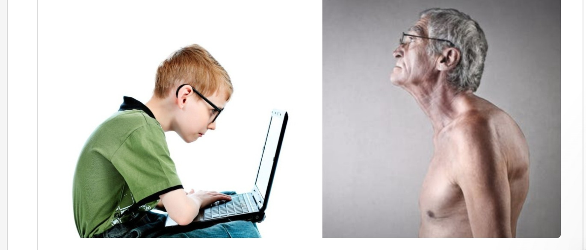
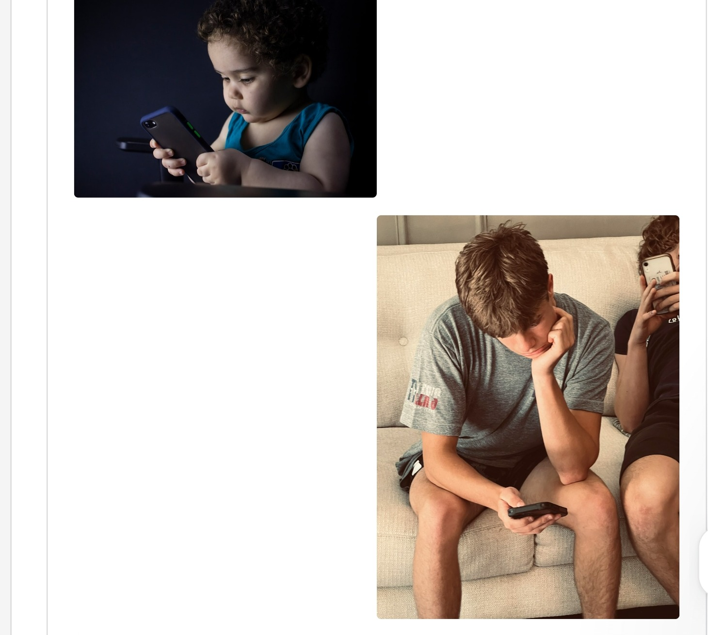
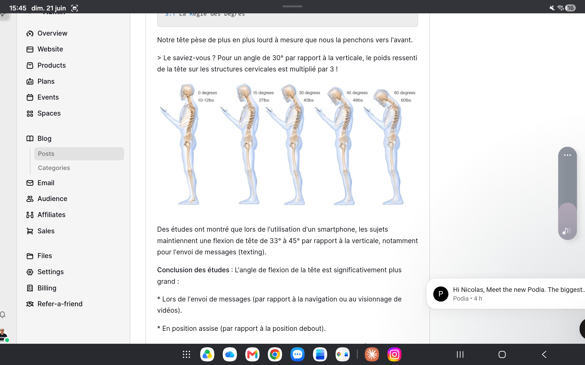
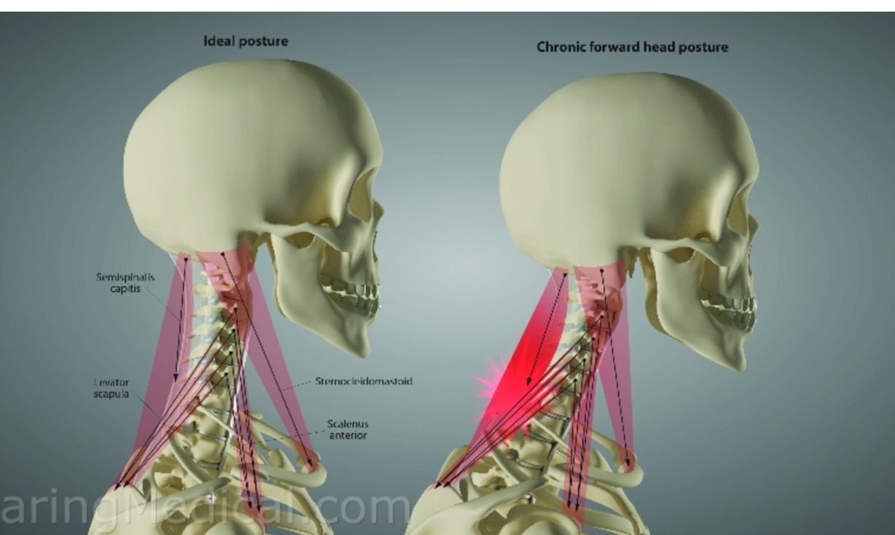
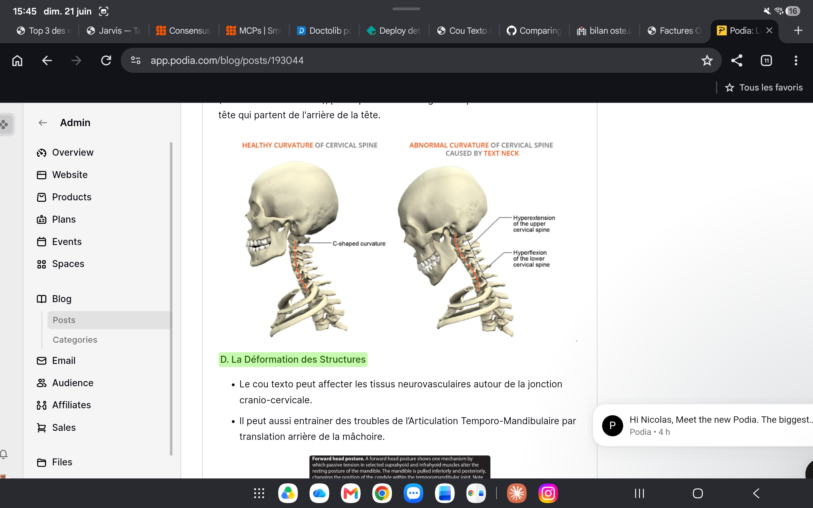
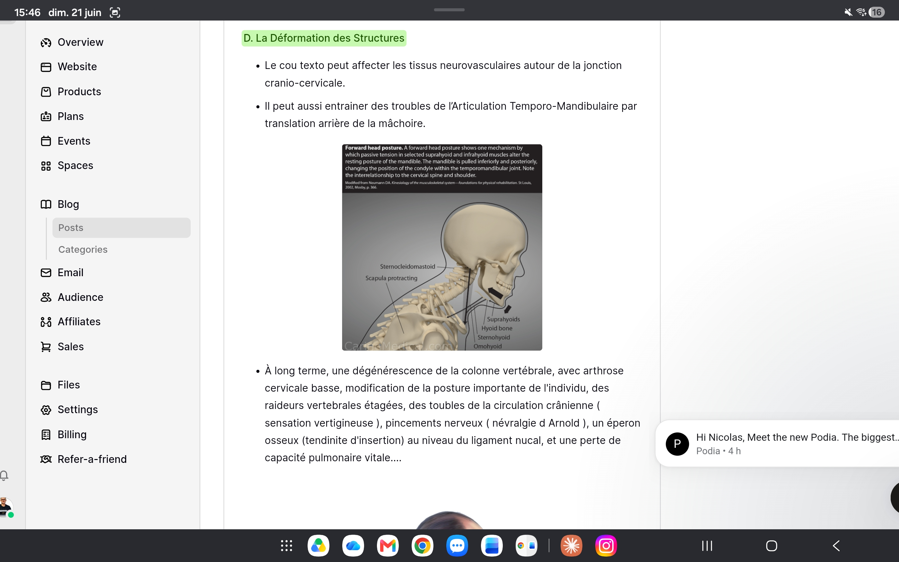

« Regardez autour de vous, tout le monde a la tête en bas. » — Dr Hansraj, Chief of Spine Surgery, New York (Washington Post)
Cette simple observation met en lumière un phénomène de santé publique moderne : le Syndrome du Cou de Texto, connu médicalement sous le nom de Forward Head Posture (FHP). Une épidémie silencieuse qui touche toutes les générations.

À gauche : utilisation typique du smartphone. À droite : la posture en tête en avant (FHP) fixée dans le temps.
1. Qu'est-ce que le syndrome du cou de texto ?
Le Cou de Texto est un syndrome de surutilisation affectant la tête, le cou et les épaules. Il résulte d'une tension excessive sur la colonne vertébrale causée par le fait de regarder vers l'avant et vers le bas un appareil électronique portatif (téléphone, tablette, liseuse...).
Symptômes les plus fréquents
- Maux de tête (céphalées cervicogènes)
- Douleurs au cou, aux épaules et aux bras
- Gêne respiratoire
- Douleurs lombaires et musculo-squelettiques générales
2. Une population en danger
Il est établi qu'1 personne sur 4 dans le monde passe de nombreuses heures par jour penchée sur un appareil électronique. Mais les enfants et les adolescents représentent la cible prioritaire des risques.
par jour sur écran pour les enfants et adolescents
de flexion cervicale par an au maximum
du poids corporel représenté par la tête à 6 ans (vs 12–13% adulte)

Les enfants et adolescents sont les premiers touchés : temps d'écran élevé, tête proportionnellement plus lourde, squelette en croissance.
Le risque est amplifié chez les plus jeunes car leur anatomie est en pleine croissance et leur tête est proportionnellement plus lourde. À six ans, la tête représente 20% de la taille totale de l'enfant, contre 12–13% à l'âge adulte. Ce poids supérieur exerce une pression accrue sur le rachis cervical en développement.
3. Évolution et impact biomécanique
3.1 La règle des degrés
Notre tête pèse de plus en plus lourd à mesure que nous la penchons vers l'avant. Un effet souvent sous-estimé.
| Angle de flexion | Poids ressenti sur le rachis cervical |
|---|---|
| 0° (posture neutre) | ~5–6 kg (poids réel) |
| 15° | ~12 kg |
| 30° | ~18 kg (×3 le poids réel) |
| 45° | ~22 kg |
| 60° | ~27 kg |

Visualisation de la charge croissante sur la colonne cervicale selon l'angle de flexion de la tête (Hansraj, 2014).
Des études ont montré que lors de l'utilisation d'un smartphone, les sujets maintiennent une flexion de tête de 33° à 45° par rapport à la verticale, notamment lors de l'envoi de messages. L'angle de flexion est significativement plus grand en position assise qu'en position debout, et lors du texting par rapport à la navigation ou au visionnage de vidéos.
Une flexion du cou supérieure à 20° pendant plus de 40% de la journée de travail constitue un facteur de risque d'arrêt de travail pour cervicalgie.
3.2 Impact sur les structures musculo-squelettiques
Une mauvaise posture modifie la relation longueur-tension de la colonne cervicale et des muscles de la ceinture scapulaire, altérant le schéma d'activation musculaire. Les positions de flexion du cou, protraction des épaules, flexion du coude et du poignet lors de l'utilisation prolongée du smartphone ont un effet dévastateur sur les tissus mous.

Comparaison entre une posture cervicale optimale (gauche) et un Forward Head Posture installé (droite), avec les muscles sous tension.
A. Laxité articulaire
Le FHP prolongé provoque un étirement lent des ligaments postérieurs du cou — un phénomène appelé fluage ligamentaire. Les principaux ligaments concernés stabilisent les articulations intervertébrales cervicales. Cet étirement chronique mène à une laxité des articulations intervertébrales, affectant particulièrement la colonne cervicale supérieure (C0–C2), essentielle pour la rotation et l'extension du cou.
B. Céphalées cervicogènes
La posture de la tête en avant entraîne :
- Une diminution de la lordose cervicale globale (cyphose)
- Une hyperlordose compensatoire des vertèbres cervicales supérieures (C0–C2)
Cette hyperlordose supérieure, combinée à l'instabilité et aux spasmes des petits muscles sous-occipitaux, peut irriter les nerfs occipitaux (nerf d'Arnold), provoquant des névralgies occipitales et des maux de tête partant de l'arrière du crâne.

À gauche : lordose cervicale physiologique. À droite : perte de courbure et inversion associées au syndrome de la tête en avant.
C. Effets à long terme
Sans correction, le Text Neck conduit progressivement à :
- Arthrose cervicale basse et raideurs vertébrales étagées
- Troubles de la circulation crânienne (sensations vertigineuses)
- Pincements nerveux (névralgie d'Arnold)
- Troubles de l'ATM par translation arrière de la mâchoire
- Éperon osseux au niveau du ligament nucal
- Perte de capacité pulmonaire vitale
- Modification importante de la posture globale

Le FHP entraîne une translation postérieure de la mandibule, pouvant générer des dysfonctions de l'articulation temporo-mandibulaire (ATM).
Les radiographies comparatives montrent que la correction de cette posture peut améliorer la lordose cervicale et réduire les indices d'instabilité articulaire. Autrement dit : c'est réversible si on agit tôt.
4. Solutions et prévention
Ostéopathie
La prévention, à travers une séance d'ostéopathie, vise à éviter que les déséquilibres s'installent et conduisent, avec le temps, à une posture caractérisée par une tête projetée vers l'avant. Cette démarche repose sur un bilan ciblé, permettant d'analyser les désordres articulaires, myo-fasciaux et posturaux.
L'objectif est de restaurer l'harmonie de la colonne vertébrale afin de corriger ce défaut de posture et d'empêcher qu'il ne se fixe durablement. Le poids de la tête, lorsqu'une position est maintenue trop longtemps, provoque une compression discale pouvant générer des phénomènes inflammatoires. Ces contraintes induisent un stress local, des contractions réactionnelles et compensatoires qui vont progressivement se verrouiller par le tissu fascial. C'est sur l'ensemble de ces phénomènes que l'ostéopathe intervient.
Programme de mobilité
Un programme adapté permet de corriger les troubles posturaux naissants et de lutter contre les désordres posturaux par des exercices de réathlétisation ciblés.
Recommandations ergonomiques au quotidien
Relevez votre écran
Maintenez votre appareil à hauteur des yeux, au-dessus de la poitrine.
Pauses régulières
Toutes les 20–30 minutes : posez le téléphone, bougez les épaules et le cou.
Posture assise
Oreilles alignées avec les épaules. Dos soutenu. Évitez le canapé ou la position allongée sur le côté.
Messages vocaux
Utilisez la dictée vocale ou les messages vocaux pour réduire le temps passé à taper.
Ne laissons pas notre cou devenir la victime silencieuse de notre quotidien numérique. La solution réside dans la prévention et l'éducation — des gestes simples, pratiqués régulièrement, peuvent inverser la tendance.
Votre cou mérite une évaluation
Un bilan ostéopathique permet de détecter et corriger les désordres posturaux avant qu'ils ne se fixent. Consultez en cabinet à Narbonne ou évaluez votre mobilité cervicale à distance avec MoveCheck.